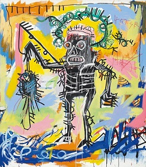
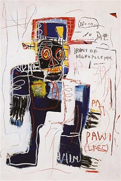

Selected works
A closer look at the figure, the written word, and the marks between them. Select an artwork to open its source and further reading.

Untitled
1981A skeletal figure occupies a field of yellow, blue, and pink. Follow its outlines and the marks that surround the body.

Irony of Negro Policeman
1981An angular figure, a tall hat, and fragments of writing share the surface. The title sets up a question about identity and authority.